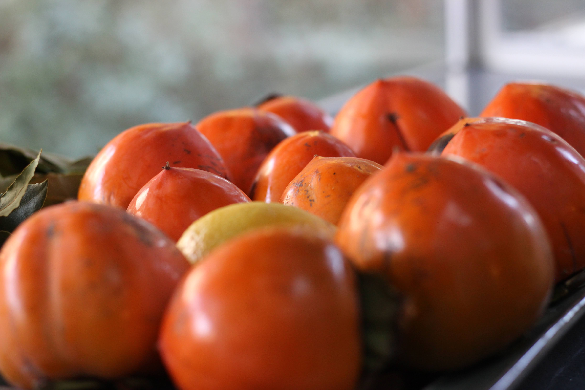
Late Summer of 2020, my spouse and I purchased a home (a whole heap of fun which I don’t want to think about). While the various fruit trees that it came with weren’t the deciding factor, it certainly seems that they will become a large part of our lifestyle.
We’ve only lived here for almost three months, and we’ve already spent quite a bit of effort on the hachiya persimmons for a good two months:
- We recruited, scheduled, and hosted people to come pick persimmons (socially distanced);
- Picking persimmons was a regular lunch hour activity for me for at least two weeks as interest for pickings waned;
- Every day I would process ripe persimmons on the counter, puree them for later use;
- I made and had persimmon smoothie (which also contained zucchini because of the zucchini explosion at my parents’ place) every morning;
- We tried out persimmon dessert recipes;
- My spouse hung the persimmons for hoshigaki, massaged them every day, and now they are ready to be consumed and sent off;
- And finally, I made and jarred at least 12 persimmon jams, with some variation in the recipe.
We didn’t count the persimmons we harvested this year, though we may try next year. I will estimate at least 200 persimmons.
According to a friend who grew up with a persimmon tree, they alternate between high yield and low yield years. So maybe, next year will be a little more chill. Or a lot less chill.
Here, I will outline how I managed to get consume of most of the persimmons. That being said, there are some ripe persimmons and deli containers containing persimmon pulp waiting to be consumed (photo taken day of posting)… 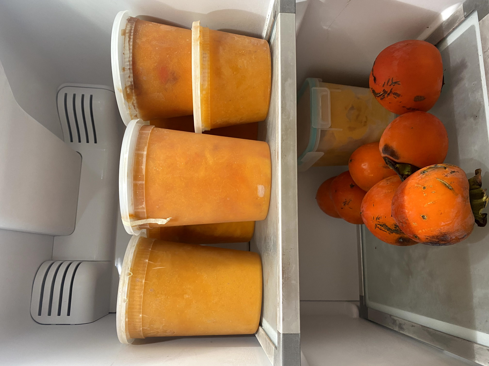
Starting a Fruit Picking Not-Business-Yet
Fruit-pickings are fun, and what better way to share the bounties than share the experience of harvesting fruit that you can take home for yourself?
With covid-19 in full bloom, it’s not as simple as having a huge fruit picking x housewarming party with all of our friends. And with our limited supplies, it won’t be as efficient.
So, no house-warming for now. We allotted 2 hour time slots for folks who were quarantined together to come on weekends to pick persimmons, socialize a bit in the yard, masked, and socially distanced.
We successfully recruited 8 parties (one not pictured) who each took anywhere between 10 to 40 persimmons. I pushed them to take as many as they can take, rather than what they wanted.
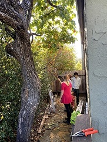 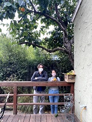 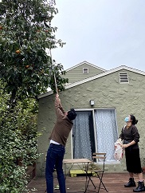 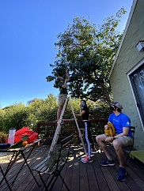 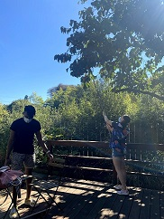
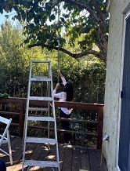 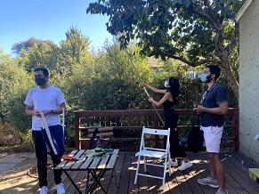
You can see the people picking it are using a fruit picker.
If we were to do this at scale, we would get a longer fruit picker and multiple of them so many people can tackle it at once.
The tree is quite large with many points of attack. I would also love to cut back some of the surrounding trees that block the fruits, but I’ll probably not do that because they serve other purposes (some are pretty, some are evergreen), and I’m too lazy and overwhelmed with other garden tasks.
But overall, especially during the time of covid-19, I was glad to take advantage of the spacious backyard and give a reason for local folks to come over and socialize safely, all meanwhile getting rid of persimmons we would have otherwise had to deal with.
A variant of this approach we did a little bit this year was just pick them ourselves and hand them off. I find that less personal and more work (for us).
Trying Recipes, Knowing What We’ll Try Again
First, I’ll go over the recipes that had success and we’ll try again, then some that need more work.
Japanese Dried Persimmons (干し柿）
This is one we are convinced we will do next year as well and at a larger scale. Follow the recipe here. Basically, peel the persimmons while hard, hang them up, wait ~week until the persimmons’ surfaces become tacky, then massage every day until powdery white on brown.
This year, we hung ten of these on October 26th and were ready by Thanksgiving, so it roughly takes around a month.
 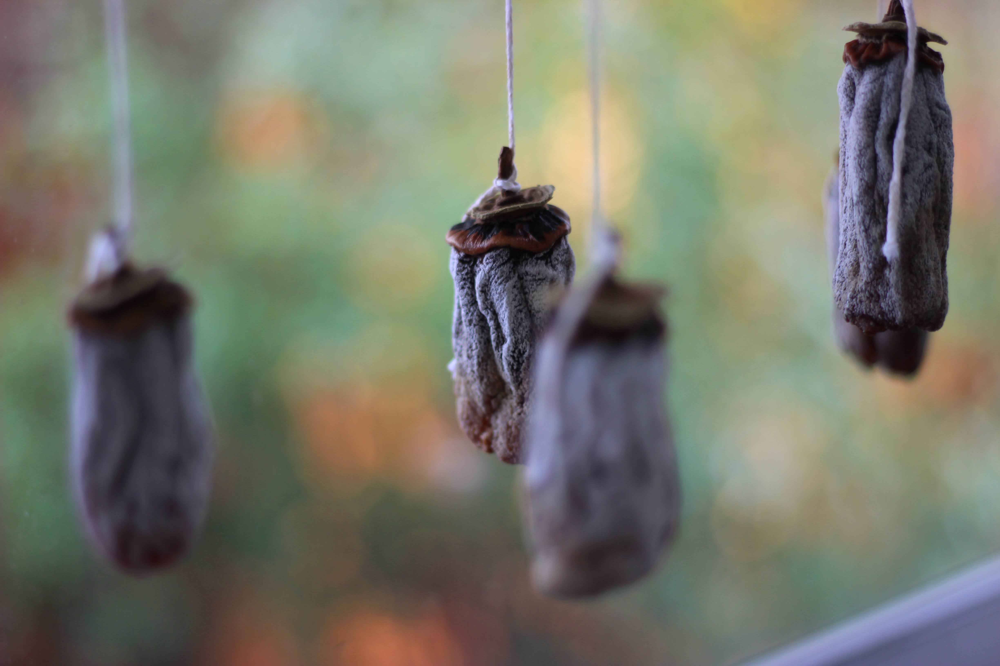
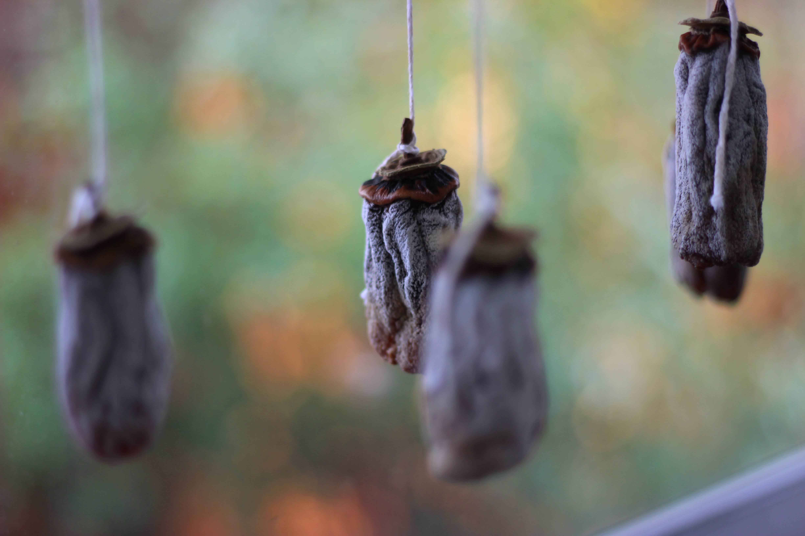
Boozy Persimmon Pudding Cake
This recipe was shared by our now-neighbor friend who was also the first party to come pick our persimmons!
I use lemon zest instead of orange zest: so, around 7 ripe persimmons that I puree lightly (leave some chunks), 1.75 cups of flour, 1.5 tsp baking powerder, 1 tsp nutmeg, 0.5 tsp salt, baking soda, cinnamon, and lemon zest, plus 1 cup of whole milk, 1 cup brown sugar, 3 eggs, 1 stick butter, and I used 0.25 cup of fireball since we don’t really drink it.
The batter is very runny. This makes a very interesting, bright pudding cake that goes great with whipped cream whipped without sugar.

I tried another pudding cake recipe that was not as interesting, and tasted more like an inside of a pumpkin pie.
Persimmon Pie
My spouse made this recipe twice. The second time he added grapefruit zest. I preferred it without the zest.
It’s kind of like a pumpkin pie but the streusel makes things interesting.

This is another dessert that’s very sweet, so it’s good with whipped cream without any sugar.
Ice Cream
Finally, onto recipes that require some modding.
It seems like people are able to make ice cream solely by mixing Thai coconut milk with ripe hachiya persimmon pulp.
I haven’t had success with this (maybe due to inprecise ratio), even by using my ice cream maker. It seems to harden too much.
I really enjoy the idea of persimmon ice cream, so I’ll be experimenting with the pulp in the freezer when it gets warm again.
Persimmon Bread/Cake
I can’t find the recipe for this one, but I used some astringent persimmons AND overbaked it, which made me unhappy.
Fortunately, it was tolerable as a breakfast bread and we went through it pretty quickly.
After this incident, I make sure to grade my pulp purees on an A-D scale as I process them and learned to throw out bad ones.

Jam
I made and jarred at least 12 jams, each a little different, naturally because each pulp puree has a different flavor, but also because I tweak the amount of lemon juice, zest, cinnamon, and sugar added.
Loosely based on this recipe I usually end up using 1kg of persimmons, 3 cups of sugar, and varying amounts of lemon juice, zest, and cinnamon.
While cinnamon adds some interest, I’m not a fan of it, as it dries out my mouth when I eat it.
The lemon zest also has a similar effect.
Currently, my favorite flavor combo has been just persimmon and sugar. We’ll see how that shapes out, since I’ll get feedback after this holiday season as my family and friends try it.
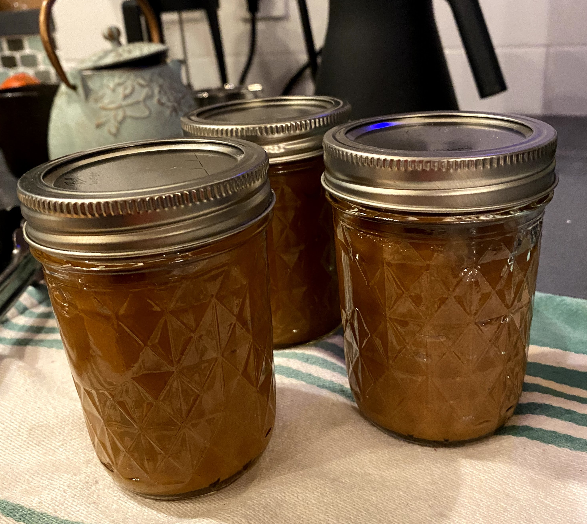
Smoothies
This is a WIP forever because I tweak it around as supply changes every morning.
During the summer we were bombarded with zucchini as my parents’ zucchini plants exploded.
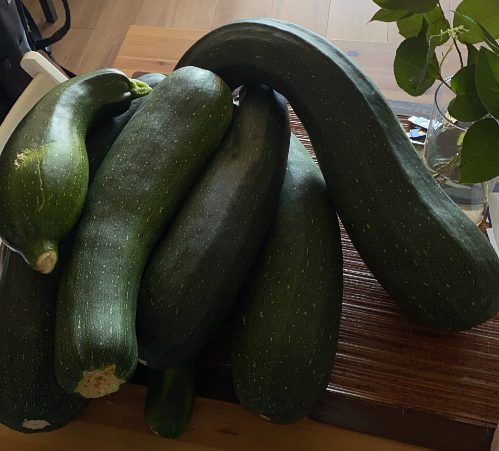
Basically we got around 4 loads of what is pictured above. So we probably went through around 24 large zucchinis.
Through it, I picked up a lot of zucchini recipes… Zucchini fritters, zucchini bread, zucchini rice, soup, etc…
Anyway, I like to currently make my smoothie with:
- 1⁄4 pack tofu
- frozen 1⁄3 banana
- 1 tbsp chia seeds
- half a ripe hachiya persimmon
- 1⁄2 cup of zucchini
- some soymilk
Here’s a picture, probably not with the recipe above, plus some cinnamon on top. I am 100% over cinnamon at this point. I do not want a whiff of that for another 3 months.
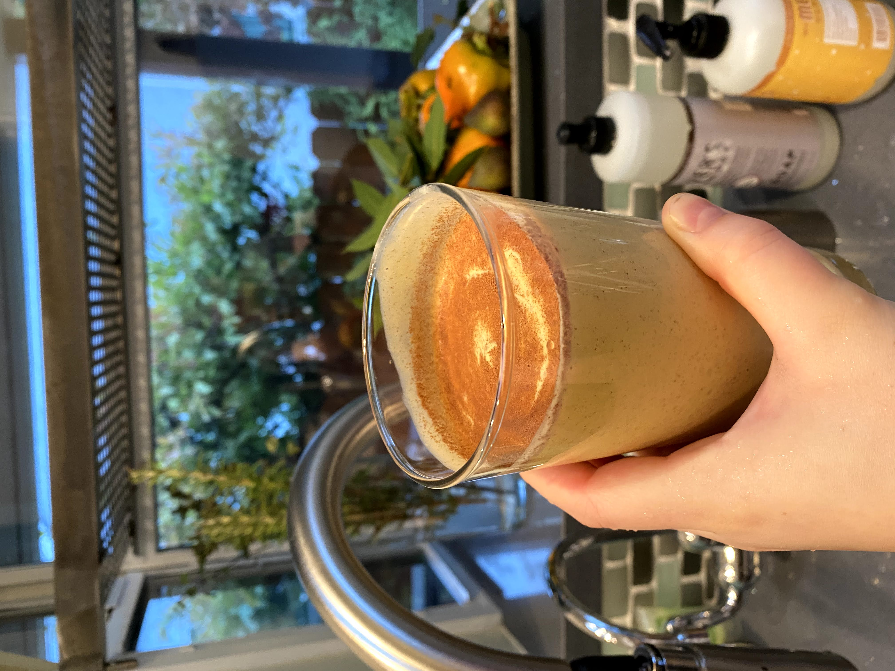
Looking Forward
There’s really nothing to say except that now that this tree is ours, we better learn how to make good use of these persimmons.
I imagine hosting picking parties and gifting jam will become a yearly occasion, and I’ll continue to be on the search for good hachiya persimmon recipes. My goal is to go through all of my pulp in the freezer by May to give myself time to look forward to the persimmon season next year.